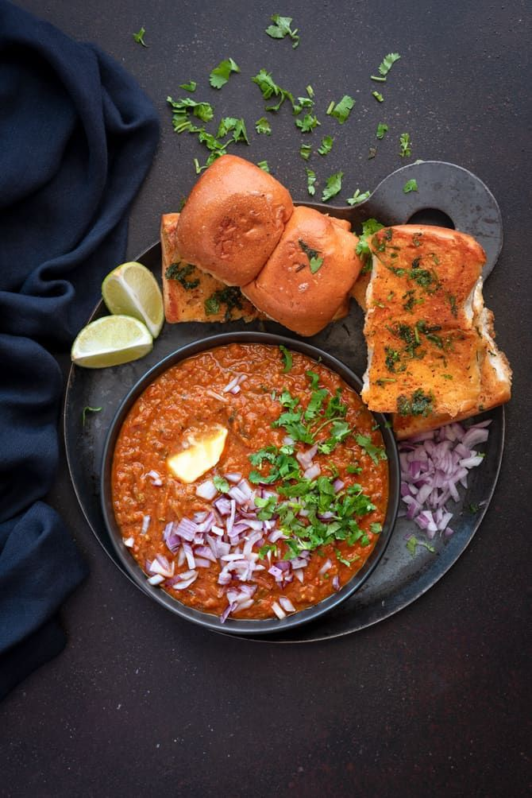
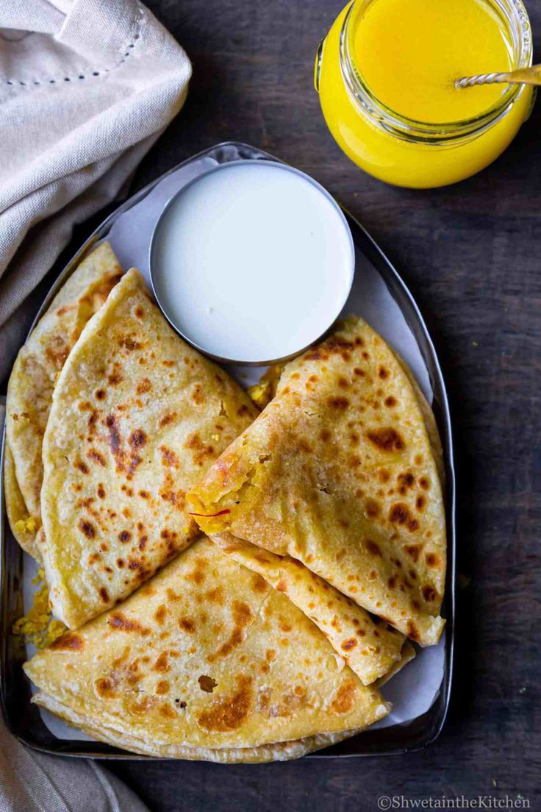
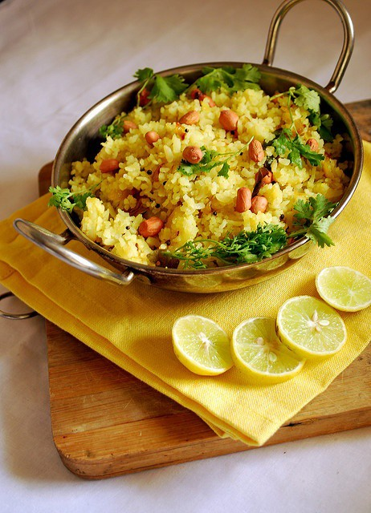
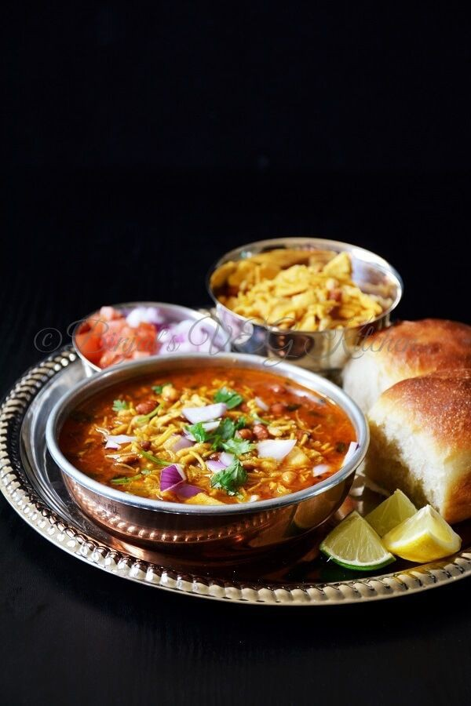

Puran poli

From the world-famous pav bhaji to the delicious poha, Maharashtra Food has a lot to offer. Food of Mahrashtra of Maharashtrian cuisine can be broadly classified into two styles- Konkan and Varadi. Konkan being from the coastal region has influences from Goan, Saraswat, Gaud and Malvani regions. Varadi cuisine, on the other hand, belongs to the Vidarbha region. Some spices like Goda Masala, Kokum, Tamarind and Coconut are essential ingredients in the Maharashtrian kitchen.

Pav bhaji |

Puran poli |
|
|---|---|---|
Pithla bhakri |
||

Poha |

Misal pav |